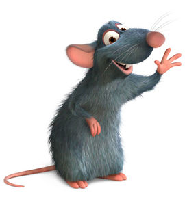
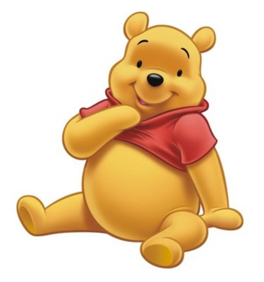

BING BONG
Inside out
Bing Bong is the tritagonist of the 2015 Disney/Pixar animated film, Inside Out. He was the imaginary friend of Riley Andersen that existed within her mind.

Bing Bong is the tritagonist of the 2015 Disney/Pixar animated film, Inside Out. He was the imaginary friend of Riley Andersen that existed within her mind.
Remy Flounders is the protagonist of Disney/Pixar's 2007 Academy Award-winning animated film, Ratatouille (Pixar's 1st Film To Be Non-THX Certified And To Have Disney Movie Rewards). He is a blue, average-sized rat who dreams of being a chef.
Winnie the Pooh, or Pooh for short, is the titular protagonist of the franchise of the same name. He is an anthropomorphic overweight yellow teddy bear who lives in the Hundred Acre Wood inside a tree. He was created by A.A. Milne.
